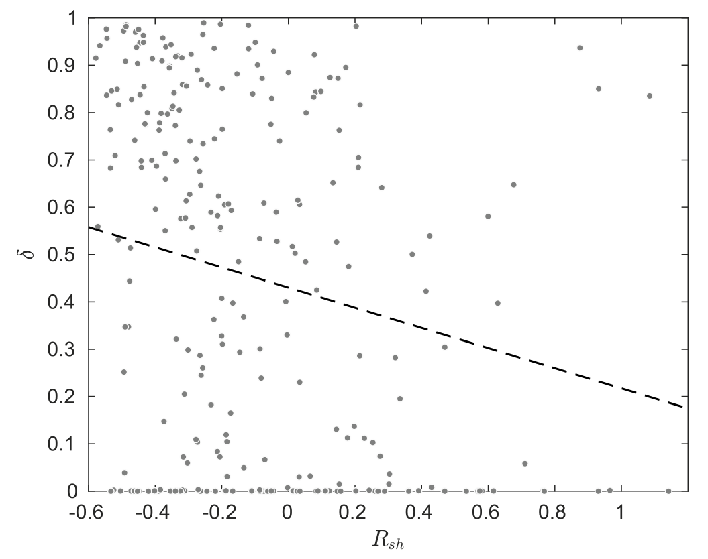
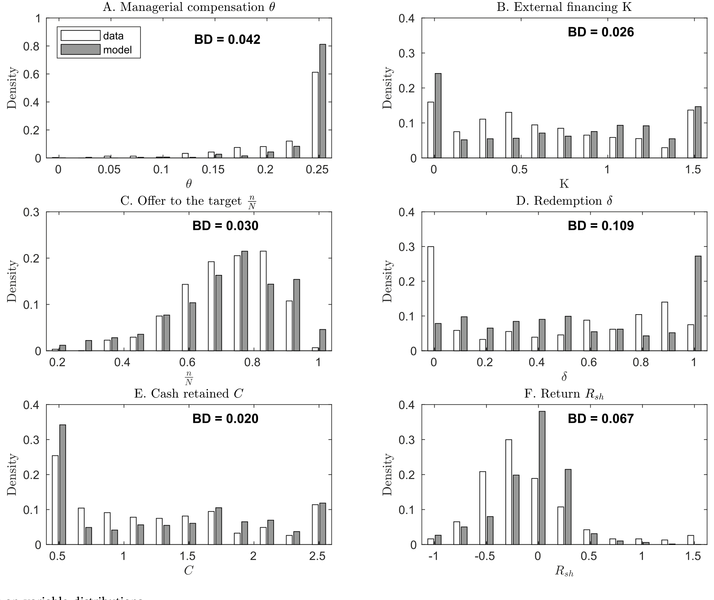
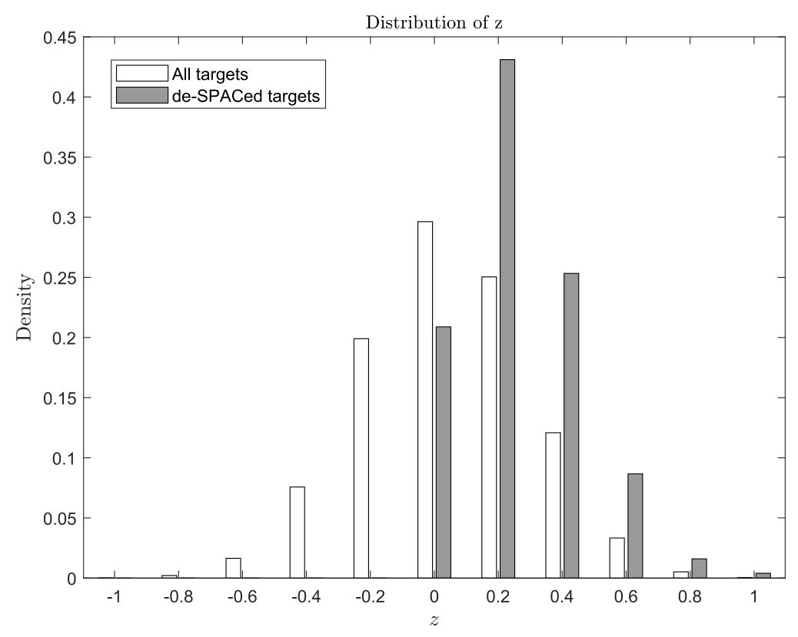
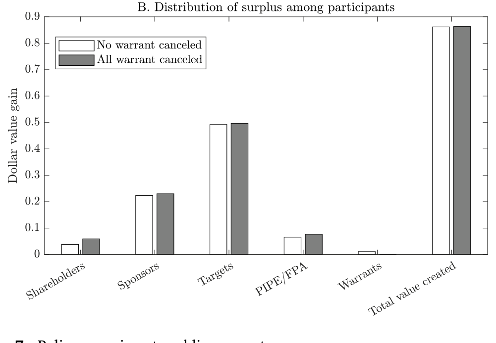
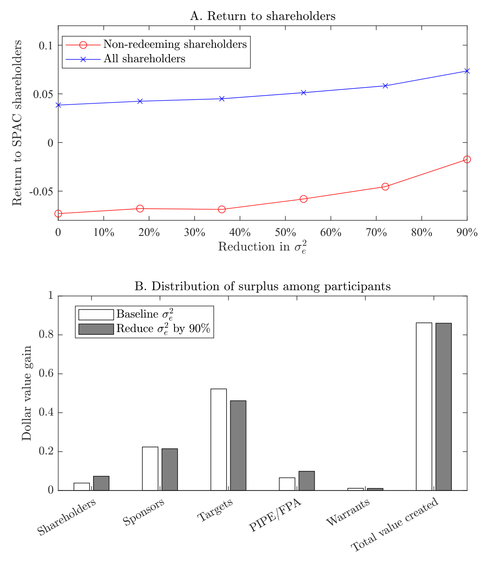
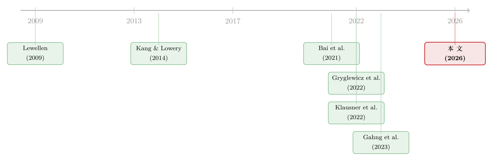

谁拿走了 SPAC 的蛋糕？——一桩“合法”财富转移背后的结构账本
本文读的是 Feng, Nohel, Tian, Wang & Wu (2026, Journal of Financial Economics)：作者用一套手工搜集的数据估计了一个 de-SPAC 阶段的结构模型，发现 SPAC 平均能把标的公司价值抬高约 24%，并非外界以为的"纯财富转移"；但合约摩擦把这块蛋糕大幅切向了发起人与标的方。只看非赎回股东，平均亏 9%；可一旦把赎回权算进来，全体股东平均其实赚 2.4%。政策实验则给出一个反直觉的结论：把发起人股份与业绩挂钩（earnout）最有用，限制权证、加强披露几乎没用。
1 引言：克莱因先生赚到的那笔钱
先讲一个故事。
2020 年，一家叫 Churchill Capital III（代码 CCXX）的空白支票公司，提议收购医疗支付清算商 Multiplan（MPLN）。交易获得了股东高票通过，几乎没人赎回。可是交易刚一完成，市场就传出消息：MPLN 最大的客户 UnitedHealth 正在内部开发一套替代系统，这意味着它即将失去一大块收入。MPLN 股价应声暴跌，留下来的 CCXX 股东损失惨重。
但这家 SPAC 的发起人（sponsor）迈克尔·克莱因（Michael Klein）——一个被指控刻意压下了这条坏消息的人——却依然在他的"promote"股份上赚得盆满钵满。
这就是 SPAC 这门生意最刺眼的地方：发起人手里攥着一大块几乎白送的股票，他赚不赚钱，和普通股东亏不亏钱，居然可以是两回事。监管者据此呼吁加强信息披露，股东则一纸接一纸地起诉那些"自肥"的发起人。一时间，"SPAC 就是一台把无知投资者的钱搬进发起人口袋的机器"，几乎成了共识。
这篇论文要问的，正是这个共识到底对不对。
几个数字先放在这里，免得我们低估这个市场：2021 年，SPAC 的 IPO 占了全美 IPO 活动的 60% 以上，全年 613 起 SPAC IPO，募集了将近 2200 亿美元。即便 2022 年市场骤冷，2022–2023 年走上市的 414 家私营公司里，仍有 200 家是借道 SPAC 上市的，和走传统 IPO 的 210 家几乎打了个平手。SPAC 没有消失，它只是从狂热回到了一个"有显著存在感"的长期稳态。
那么，SPAC 究竟是在创造价值，还是只是在重新分配价值？如果它真的在转移财富，那么蛋糕又是怎样被切走的、被谁切走的？要回答这种"谁拿走了多少"的问题，光看回报率是不够的——你必须把整个交易拆开，把每一方的得失分别算清楚。这正是结构估计 (structural estimation) 的看家本领。
2 SPAC 的机制：一场关于"留还是赎"的博弈
要读懂这个模型，得先弄清 SPAC 是怎么运转的。
SPAC（Special Purpose Acquisition Company，特殊目的收购公司），俗称"空白支票公司"，本身是个没有实际经营的壳。它先在 IPO 里募一笔钱，把钱全部锁进一个信托账户——发起人在完成并购或清盘之前，一分钱都动不了。然后，发起人去市场上寻找一家私营公司，把壳"卖"给它，让这家私营公司借壳上市。这个完成并购的过程，就叫 de-SPAC。
整套机制里，有三个关键设计，恰好对应着三方的利益：
第一，发起人的报酬叫"promote"。 发起人帮忙找标的、谈交易，作为回报，他会拿到相当于 IPO 股份 25% 的额外股票。换算下来，在没有赎回的情况下，发起人能白拿到合并后公司约 20% 的公众股份。这块股份的成本，是由所有其他股东分摊的——这就是克莱因们"旱涝保收"的来源。
第二，股东握有"赎回权"。 当股东对一桩拟议的并购投票时，他们保留一项权利：可以按 IPO 价格（约 10 美元，或略高）把自己的股份赎回、拿钱走人。注意，股东可以一边投赞成票，一边把自己的股份赎回。这才是整个流程的命门。
第三，赎回会抽干现金，威胁交易达成。 赎回率越高，留在信托里的钱就越少，交易越可能因为现金不够而流产。一旦 SPAC 在限期内没能完成交易，它就得清盘——股东按比例拿回信托里的钱，而发起人则一无所获。
于是，发起人面对的是一场两难：他想给自己多留点（多拿 promote、给标的开高价），但这些动作会让交易看起来更糟，逼得更多股东赎回，从而提高交易流产的概率。反过来，对股东更友好的条款能压低赎回率、保住交易，但发起人自己得让利。
接着，一个自然的问题是：股东凭什么决定"留还是赎"？他们靠的是信息推断。股东能看到的公开信号（public signal）包括拟议的交易条款、发起人的声誉；此外他们还各自掌握一些私人信号（private signal）。他们要根据这些信号，去猜这桩交易到底好不好,再决定要不要赎回。
这就把舞台彻底搭好了：发起人和标的方在谈条款时，会预判股东的赎回行为；而股东在决定赎回时，又会反推发起人在条款里"藏"了什么。代理成本（发起人多大程度上不在乎股东死活）和信息摩擦（股东能多准地看穿交易质量）这两股力量，共同决定了价值如何被创造、又如何被分配。要把这种环环相扣的博弈算清楚，唯一的办法就是写下一个均衡模型，再把它带到数据里去。
3 模型：把三方博弈写成方程
这是一篇结构论文，模型是它的脊梁。我们一步步来。
3.1 合并后公司值多少钱
模型聚焦于 de-SPAC 阶段。为了干净，作者把 SPAC IPO 发行的单位数归一化为 1，募资额也归一化为 1——这意味着计价单位（numeraire）是 10 美元。每个 SPAC 单位含 1 股普通股，外加比例为 \(w\) 的认股权证（warrant），\(w\) 在不同 SPAC 间取 \(0, \tfrac14, \tfrac13, \tfrac12, \tfrac34, 1\) 等值，模型里视作给定。
第一步，算 SPAC 带进交易的现金。 设 \(\delta\) 为被赎回的股份比例，那么留下来的 \(1-\delta\) 美元（由非赎回股东出资）就留在 SPAC 里；再设外部募集（PIPE / FPA）的现金为 \(K\)。于是 SPAC 带入交易的总现金是：
$$ C = 1 - \delta + K $$
第二步，算合并后公司的总价值。 设标的公司作为独立私营实体的价值为 \(u\)，一旦并入 SPAC，它的价值变为 \((1+z)\,u\)。这个 \(z\) 就是"并入 SPAC 所创造的回报"——可以是上市本身带来的收益，也可以是发起人的网络、建议等带来的增值；当然，如果标的被过早推上市、或者管理层过度投资，\(z\) 也可能是负的。再加上认股权证行权时注入的现金（仅当并购后股价 \(p\) 高于行权价 1.15 时发生），减去各项费用 \(F\)，就得到合并后公司的总价值。这是全文最核心的一个方程：
这里 \(\mathbf{1}_{\{p>1.15\}}\) 是个指示函数：并购后股价 \(p\) 高于行权价 1.15 时取 1，否则取 0。权证持有人此时支付 \(1.15\cdot w\) 的现金，换取 \(w\) 股股权。
第三步，算总股本，把蛋糕的"分母"摆出来。 合并后这块价值 \(V\) 要按各方持股比例来分。非赎回股东持有 \(1-\delta\) 股；外部投资者（PIPE/FPA）以 IPO 价买入，持有 \(K\) 股；标的股东被给予 \(n\) 股作为对价；发起人的 promote 名义上是 0.25 股，但他可以选择放弃一部分，所以发起人的最终持股 \(\theta\in[0,0.25]\) 由模型内生决定；权证持有人若行权则持有 \(w\) 股。加总起来：
$$ N = 1 - \delta + K + n + \theta + w\cdot \mathbf{1}_{\{p>1.15\}} $$
合并后的每股价格就是 \(p = V/N\)。注意这里有个微妙的不动点：权证要不要行权取决于 \(p\)，而 \(p\) 又取决于权证是否行权（它同时进入分子 \(V\) 和分母 \(N\)）。这个自洽条件，是模型求解里必须处理的一环。
3.2 代理成本与信息摩擦：摩擦藏在哪里
模型的灵魂不在上面的会计恒等式，而在两个"看不见"的参数。
代理成本。 发起人当然在乎自己那块 promote 带来的收益；但他在多大程度上还在乎普通股东的死活？论文的设定是：发起人的目标函数是"自己的报酬"和"股东的盈亏"的加权和，而那个权重——发起人对股东盈亏的内化程度——是不可观测的。这个权重越低，利益错配越严重，代理成本越高。对齐良好（低代理成本）的发起人，会主动争取对股东更友好的条款。
信息摩擦。 股东掌握的私人信号有多精确，决定了他们能多准地看穿交易质量。信号越精确，"看到坏交易就赎回、看到好交易就留下"这件事就做得越干净。
发起人于是手握三件可以"安抚股东、压低赎回"的工具：(1) 通过 PIPE 引入外部资本，既给交易带来更多现金，又用"成熟投资者愿意进场"向股东传递交易靠谱的信号；(2) 主动放弃部分 promote（即降低 \(\theta\)）——成本由其他人分摊，所以他让利对所有人都好；(3) 把部分 promote 与业绩挂钩，做成 earnout——可以理解为"在事后糟糕的交易里，自愿放弃一大块 promote"。
这就引出了模型最漂亮的均衡逻辑：所有决策是联立、且被各方理性预期的。发起人和标的在谈条款时，会预判股东的赎回；股东在赎回时，会反推被发起人精心优化过的条款里"藏着什么"。于是，发起人放弃 promote、外部融资、给标的开的价，每一个动作都同时是一个信号。
4 数据与估计：让模型去对齐数据里的"指纹"
要把上面这套博弈算出数字，作者手工搜集了一套美国上市 SPAC 的综合数据，覆盖 2010 年到 2022 年 3 月间完成并购的 SPAC。这套数据真正区别于以往研究的地方，在于它包含了大量合约细节：发起人报酬的明细（放弃的 promote 股份、私募权证、发起人 earnout）、发起人引入的外部融资（FPA、PIPE 等）、给标的股东的股份与现金对价，以及 SPAC 股东的总赎回率。以往的研究大多只盯着 SPAC 的回报，而这套数据让作者得以直击合约里的代理成本与信息摩擦。
估计的思路，是去搜寻一组参数，让模型尽可能贴近数据里那几个关键矩（moment）。其中最关键的一条"指纹"是：在数据里（也在模型里），赎回率与事后的交易表现负相关——也就是说，股东确实能根据公开和私人信息，部分地推断出交易质量。越是事后糟糕的交易，赎回的人越多。如图 2 所示，这条负相关关系正是信息推断在起作用的直接证据。

Figure 2: Redemption rate and returns to non-redeeming SPAC shareholders. 𝑠ℎ
估计出来的模型很好地复现了这些特征：发起人放弃 promote，预示着低的股东回报；外部资本进场，给交易质量背书；给标的开出的慷慨报价，则是潜在"买贵了"的警告。发起人声誉与交易质量强相关，但和代理成本只有微弱关联。模型对各变量分布的拟合（图 3）相当紧密。

Figure 3: Model fit on variable distributions
把一个均衡模型"蒸馏"成可估计的对象，本身就是一门手艺——尤其当解里嵌着不动点时。关于结构模型如何被高效求解与逼近，可参见《把结构模型「蒸馏」成一张查找表：深度代理与期权定价》。
5 主要结果：蛋糕在变大，但被切歪了
然后，反转出现了。
第一个反转：SPAC 其实在创造价值。 估计结果显示，SPAC 平均而言为经济创造了可观的价值——通过筛选并把高潜力的标的带上公开市场，这块价值约相当于标的独立价值的 24%。这和"SPAC 主要靠从无知投资者那里转移财富、自身几乎不创造价值"的流行看法正相反。如图 4 所示，价值创造是实打实的。结合 Gryglewicz 等 (2022) 和 Bai 等 (2021) 的论点——SPAC 的标的往往很难走传统 IPO、留在私营市场又面临融资约束——这个发现说明，SPAC 通过打开"上市"这条通道，释放了本来会被埋没的价值。

Figure 4: Value Creation by SPACs
第二个反转：股东的回报，要连赎回权一起算。 只看非赎回股东，他们平均亏了 9%。如果故事到此为止，"SPAC 毁灭价值"似乎坐实了。但真正关键的一步在于：赎回权本身是有价值的。一旦把赎回的股东、以及他们赎回所得的回报算进来，全体 SPAC 股东的平均收益其实是正的 +2.4%。
为什么会这样？因为赎回权是一个期权：在事后糟糕的交易里，更多股东选择提前赎回、落袋为安，最后只剩很少的人留在里面承担亏损——这极大地削减了价值毁灭的规模；而在更有希望的交易里，更多股东选择留下来，分享了可观的回报。换句话说，只盯着非赎回股东的回报，会系统性地误判 SPAC 对股东整体福利的影响。
这一点对实证研究的提醒非常硬核：以往大量"SPAC 让股东亏钱"的结论，多半建立在非赎回股东样本上——这是一个被赎回行为筛选过的、有偏的样本。
但价值的分配确实被切歪了。 虽然蛋糕在变大，合约摩擦却把这块蛋糕大幅切向了发起人和标的方，留给 SPAC 股东的相对偏少。所以更准确的图景不是"SPAC 毁灭价值"，而是"SPAC 创造了价值，但在分配上仍有很大的改进空间"。
6 政策实验：哪味药真的管用？
既然问题出在分配，那监管者提的那些药方，到底有没有用？作者把估计好的模型当作实验室，做了三个反事实（counterfactual）实验，分别对应三项被广泛讨论的政策。
药方一：earnout（把发起人股份与业绩挂钩）。 让一部分 promote 在股价达不到触发价时作废。结果：每把发起人 promote 中与 earnout 挂钩的比例提高 10%，非赎回股东的回报就上升 1.8 个百分点。 这是三味药里效果最猛的。原因有二：一是它直接增加了价值创造，二是它压缩了分给发起人的那块，从而缓解了发起人与股东之间的利益冲突。
药方二：限制权证发行。 权证是稀释性的——行权会产生新股。支持者认为少发权证能减少稀释、抬高非赎回股东回报。可结果令人失望：权证发行量每减少 10%，非赎回股东回报只上升 0.3 个百分点。 而且限制权证几乎不能缓解代理成本，因为权证稀释主要是在"事后表现强劲"时才成为问题，而那恰恰是代理成本高时最不可能出现的情形。

Figure 7: Policy experiment: public warrants
药方三：加强信息披露。 通过提高股东私人信号的精度来减少信息不对称。结果同样让人意外：除非把私人信号的精度提高到一个不现实的程度，否则加强披露的效果非常有限。如图 8 所示，沿着披露这条轴线推，福利曲线几乎是平的。

Figure 8: Policy experiment: disclosure
于是三味药排出了一个清晰的次序：与其在披露和权证上做文章，不如把发起人的报酬真正绑到业绩上。 这是一个关于"激励"的结论——名字叫"SPAC 发起人的激励"，名副其实。
7 文献脉络
把这篇论文放回它所在的研究河流里，会看得更清楚。
早期关于 SPAC 的研究，几乎都被样本规模卡住了脖子——Lewellen (2009)、Jenkinson and Sousa (2011)、Cumming et al. (2014)、Dimitrova (2017) 等等，能描述的现象有限。直到 2020/2021 年 SPAC 井喷，才催生了一批用更全面样本来研究 SPAC 决定因素与后续表现的工作，如 Klausner et al. (2022)、Gahng et al. (2023)。
接着，理论这一侧也热闹起来：Gryglewicz, Hartman-Glaser, and Mayer (2022) 论证 SPAC 是把"好并购"和"坏并购"分离开来的有效机制；Bai et al. (2021) 则把 SPAC 发起人视为撮合"逐利投资者"与"高成长高风险公司"的中介。这条"SPAC 究竟好不好"的争论，一直缺一个能把价值创造与摩擦量化的工具。

而本文真正的位置，是把它接到另一条更老的河流上——用结构估计来量化资本市场中的信息摩擦与代理冲突：Kang and Lowery (2014) 估计经理人对上市的偏好如何加剧 IPO 抑价；Celik et al. (2022) 发现收购方与标的间的信息摩擦能吃掉这个市场 60% 的潜在收益；Wang and Wu (2020) 量化收购中的管理层控制权收益。本文把这套"结构估计 + 摩擦量化"的方法第一次搬进了 SPAC 市场——而 SPAC 的独特之处恰恰在于，发起人报酬的结构本身就在放大代理冲突。
把 SPAC 发起人看作一个"中介"，去撮合资金与难以走传统通道上市的公司，这个视角和中介理论里"先卖给中间商反而能治好柠檬市场"的逻辑遥相呼应（参见《承诺去交易：为什么「先卖给中间商」反而能治好柠檬市场》）。
8 评论与延伸（Q&A + 研究方向）
(a) 几个可能的疑问
Q：既然 SPAC 平均创造了 24% 的价值，为什么口碑这么差？
因为价值创造和价值分配是两回事。蛋糕变大了，但合约摩擦把它切向了发起人和标的方，加上公众长期盯着"非赎回股东亏 9%"这个有偏的数字，自然就形成了"SPAC 毁灭价值"的印象。论文的贡献恰恰是把"创造"和"分配"拆开来算清楚。
Q：那个 +2.4% 的全体股东收益，是不是把赎回权的价值算重了？
关键在于赎回是一个真实可行使的期权，且与事后表现负相关（图 2 是直接证据）。坏交易里多数人提前赎回、只有少数人承担亏损，好交易里多数人留下分享收益——这个非对称是 +2.4% 的来源，而非重复计算。当然，这个数字依赖结构模型对回报分布的刻画，对模型设定有一定敏感性。
Q：代理成本是个"看不见"的参数，怎么能信它被估出来了？
它不是直接观测的，而是通过发起人的可观测行为来识别的——例如放弃多少 promote、引入多少外部资本、给标的开多高的价。模型把这些行为映射为信号，再用它们在数据里与事后回报的相关结构来反推代理成本。识别力强不强，最终取决于这些矩在数据里是否足够有信息量。
Q：为什么加强披露几乎没用，这不反直觉吗？
因为模型里股东已经能从条款、声誉和私人信号中相当程度地推断交易质量了——边际上再多给一点公开信息，能改善的空间有限。只有当私人信号精度被提高到不现实的水平，披露才显著见效。这说明 SPAC 的问题主要不是"信息不够"，而是"激励错配"。
Q：earnout 这么有效，为什么市场不自发普遍采用？
这正是论文留下的张力。earnout 要发起人事后让利，在谈判中发起人未必有动机主动接受；而且它的好处部分外溢给了全体股东。这恰恰是政策可以介入的地方——把私人不愿做、但社会有益的安排推为标准条款。
Q：这套结论能外推到当下的 SPAC 市场吗？
样本截至 2022 年 3 月，覆盖的是狂热期及其前后。论文也指出 SPAC 正走向一个"有显著存在感"的长期稳态。稳态下的参数（赎回行为、外部融资可得性）可能与狂热期不同，外推需谨慎。
(b) 几个可能的研究问题与提案
1. SPAC 与公司债：de-SPAC 公司的信用利差与发起人激励
【经济故事】既然发起人的代理成本会系统性影响合并后公司的价值与资本结构，那么债权人是否也会对"发起人激励"定价？代理成本高、earnout 比例低的 de-SPAC 公司，上市后发债的信用利差是否更宽？这把本文的股东视角延伸到了债权人视角。 【可行性】中。需要把本文的发起人报酬数据与 de-SPAC 公司后续的债券发行（TRACE、Mergent FISD）匹配，识别上可用 earnout 比例的横截面差异，但样本量可能偏小，需小心选择性。
2. 外资持有人与 SPAC 赎回行为
【经济故事】赎回决策本质上是信息推断。不同类型的股东（机构 vs 散户、本土 vs 外资）私人信号精度不同，赎回的"择时能力"是否不同？外资持有人是否系统性地赎回得更早或更晚？这能把信息摩擦参数按持有人类型拆开。 【可行性】中偏低。难点在于拿到股东层面的赎回明细——本文用到了 Gritstone 的赎回数据，但持有人身份的颗粒度通常不够。若能匹配 13F 与赎回窗口前后的持仓变动，或许可行。
3. 把赎回权当期权：SPAC 信托的隐含波动率交易
【经济故事】SPAC 股份在 de-SPAC 前近似一个"信托底价 + 看涨期权"的结构。赎回权与表现负相关意味着这个期权是有真实价值的。能否用期权定价框架直接给 SPAC 股份的赎回权估值，并检验市场价格是否反映了它？ 【可行性】高。SPAC 上市前的二级市场价格可得，信托底价已知，行权/赎回条款公开，可直接构造隐含期权价值并与模型估值对照。
4. 发起人声誉的资产定价：连续做 SPAC 的发起人是否被市场学习？
【经济故事】本文发现声誉与交易质量强相关、与代理成本弱相关。那么市场是否会随发起人的历史业绩"学习"其类型，从而压低后续 SPAC 的赎回率？这是一个关于声誉资本形成的动态问题。 【可行性】高。发起人可跨多个 SPAC 追踪，历史 de-SPAC 表现可得，识别上可用同一发起人前后两单的赎回率变化。与私募市场里"无战绩也能拿到钱"的声誉逻辑相映成趣（参见《没有战绩，照样拿到钱：私募市场里，LP 为什么愿意把钱交给「新人」？》）。
我的判断
这篇论文最大的贡献，是把一场吵了很久、却谁也说不清的争论——"SPAC 到底创不创造价值"——变成了一道可以算的账：它第一次构造并估计了一个带代理成本与信息摩擦的可行 SPAC 模型，并干净利落地把"价值创造"和"价值分配"分了开来。"非赎回股东亏 9%、全体股东赚 2.4%"这个对比，单凭它就足以改写很多人对 SPAC 实证证据的读法。政策实验里"earnout 远比披露和权证管用"的排序，则把讨论从"信息"拽回到了"激励"，干脆而有政策含义。
要说对识别的担忧，核心还是那个不可观测的代理成本参数——它完全依赖发起人可观测行为与事后回报之间的相关结构来识别，模型设定（尤其是回报分布和议价协议的函数形式）一旦改变，那个漂亮的 +2.4% 和 24% 会不会跟着移动，是需要更多稳健性来打消的。另外，样本截至 2022 年初、以狂热期为主，稳态下的外推要打个问号。
后续我最想看到的，是把债权人和股东类型放进来：发起人激励既然能定价进股权，它应该也能定价进信用利差；而赎回这个"择时期权"在不同持有人手里值多少钱，本身就是一道漂亮的实证题。
参考文献
- Albuquerque, R., & Schroth, E. (2010). Quantifying private benefits of control from a structural model of block trades. Journal of Financial Economics 96(1), 33–55.
- Albuquerque, R., & Schroth, E. (2015). The value of control and the costs of illiquidity. Journal of Finance 70(4).
- Bai, J., Ma, A., & Zheng, M. (2021). Reaching for yield in the going-public market: Evidence from SPACs. Working paper.
- Celik, M. A., Tian, X., & Wang, W. (2022). Acquiring innovation under information frictions. Review of Financial Studies.
- Dimitrova, L. (2017). Perverse incentives of special purpose acquisition companies, the "poor man's private equity funds". Journal of Accounting and Economics 63(1), 99–120.
- Gahng, M., Ritter, J. R., & Zhang, D. (2023). SPACs. Review of Financial Studies.
- Gryglewicz, S., Hartman-Glaser, B., & Mayer, S. (2022). PE for the public: The rise of SPACs. Working paper.
- Kang, J., & Lowery, R. (2014). The pricing of IPO services and issues: A quantitative assessment. Working paper.
- Klausner, M., Ohlrogge, M., & Ruan, E. (2022). A sober look at SPACs. Yale Journal on Regulation 39, 228–303.
- Lewellen, S. (2009). SPACs as an asset class. Working paper.
- Longstaff, F. A. (1995). How much can marketability affect security values? Journal of Finance 50(5), 1767–1774.
- Wang, W., & Wu, Y. (2020). Managerial control benefits and takeover market efficiency. Journal of Financial Economics.